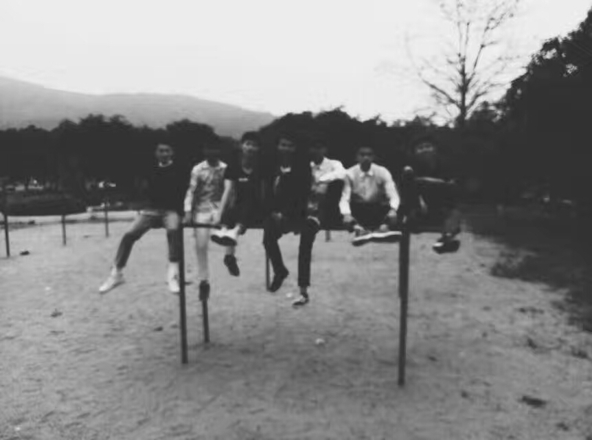
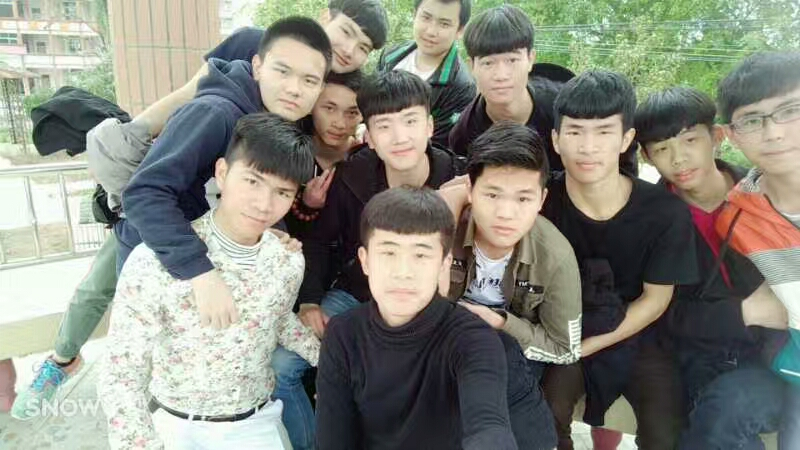
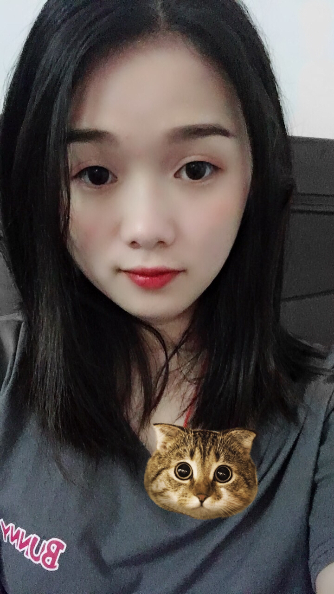
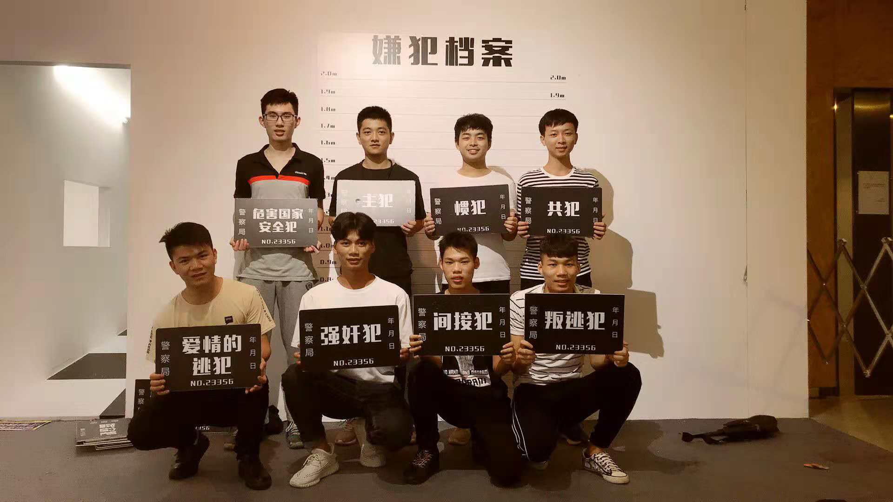
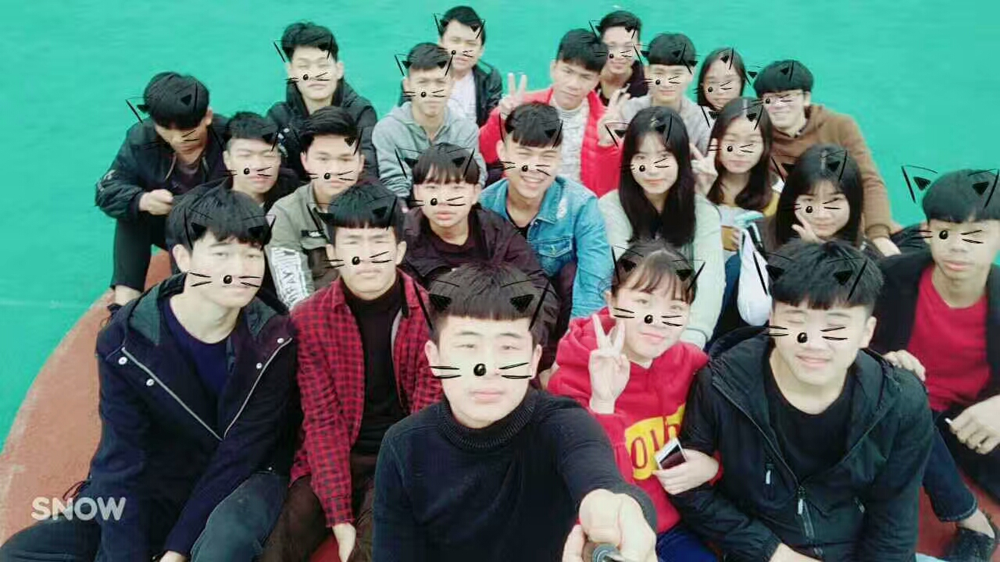
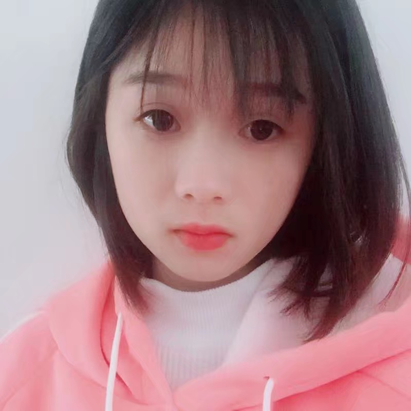
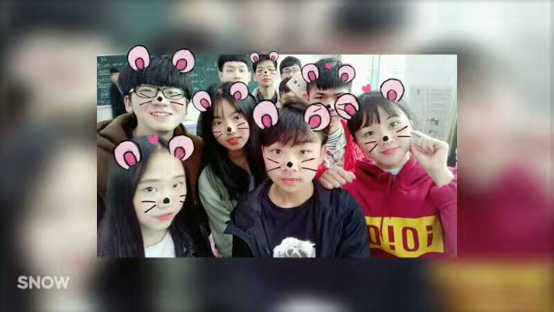

.jpg)
时光老去
·喜欢的歌，静静地听，喜欢的人，远远地看！
·爱对了是爱情，爱错了是青春。
·对不起是你的解脱，不代表我要原谅你的过错。
·想想我们曾经无关 又何必彼此为难。
·时光只会老去，但时光从不会欺骗我们。
.jpg)
高中
·青春就是再近的距离，也要跑着去。
·青春是明知道错了，偏要任性到底！
·青春是纵然梦想很远，踮起脚尖就能更近一些。
·青春是偏要选择在愚人节告白，就算被拒绝也能笑着说愚人节快乐。
·青春是有话就不好好说，偏要悄悄说。
·青春就是爱情友情梦想和热血。因为青春，所以来得及。

青春路
·时间一点一滴地过去，流逝告别。我们慢慢地走向一个被上帝作记号的地点。
·旋转着的，五彩缤纷的物质世界。等价交换的，最残酷的也最公平的寒冷人间。
·我用十年青春，赴你最后之约!
·有些人 交错后就转身， 只留下背影从此不再过问。
·被冰封的心，无止境的休眠，我在等待为我破冰的人。
·此刻的别离，我们沉默不语。不经世的我们，约好下一个路口等。
.jpg)
147班
·不要跟最好的朋友一起谈理想。
·梦想是什么，梦想就是一种让你感到坚持就是幸福的东西。
·当才华撑不起野心的时候，只能安静读书。
·最大的骗子其实是我们自己，因为我们总是想改变别人，而拒绝改变自己。
·你知道吗 听一个人说话，不要听他说了什么，而是要听他没说什么。
.jpg)
变成石头
·独行太久心会变坚硬，只有爱会让它松动。
·痛苦的将就不如痛快的分手。
·在通往成功的道路上，坚持不等于缺心眼。
·牵手的甜蜜是短暂的,分手的痛苦是永恒的,这就是人类的宿命。
·人生的道路就如同内裤，每一条都是自己选的。

后会无期
·我们听过无数的道理，却仍旧过不好这一生。
·喜欢就会放肆，但爱就是克制。
·每一次告别，最好用力一点。多说一句，可能是最后一句。多看一眼，可能是最后一眼。
·有时候，你想证明给一万个人看，到后来，你发现只得到了一个明白的人，那就够了。
·带不走的留不下，留不下的莫牵挂。
·都是你漫漫长路上，过客而已。

出现过
·如果世界上曾经有那个人出现过，其他人都会变成将就。而我不愿意将就。
·你跑的那么慢，我当初是怎么让你追上的？
·其实等待并不可怕，可怕的是不知道何时是个尽头。
·向来缘浅，奈何情深;已然情深，何惧缘浅。
·世界上最痛苦的事，不是无能为力，而是当一切都触手可及，我却不愿伸出手去。
.jpg)
匆匆那年
·那时候，我们以为喜欢就是永远。后来才发现，我们只有曾经，没有永远。
·我喜欢你 是我的 不是我的 我都喜欢
·在开始时毫无所谓，在结束时痛彻心扉。
·你可以打我，你可以骂我，但你千万不要说我没有努力过。
·我想从这里开始重新来过，和之前不一样的重新来过。
·既然已匆匆，不如早怀念。

同桌的妳
·时间太长 我怕等不到你，距离太远 我怕追不上你，爱情太沉 我怕放不下你。
·这是我们两个人的事，我一个人办不到。
·总有一天，我会带你去只有我们两个人的地方。
·记忆总是喜欢添油加醋，它会朝着你期待的方向修改，当你欣喜若狂的时候，真相，会将你惊醒。
·总有一天，我会带你去只有我们两个人的地方。
.jpg)
青春
·人的一生只有一次青春。
·现在，青春是用来奋斗的；
·将来，青春是用来回忆的。
.jpg)
千与千寻
·人生就是一列开往坟墓的列车，路途上会有很多站，很难有人可以自始至终陪着走完。当陪你的人要下车时，即使不舍也该心存感激，然后挥手道别。
·曾经发生过的事情不可能忘记，只不过是想不起而已。
·人永远不知道，谁哪次不经意的跟你说了再见之后，就真的不会再见了。
·我只能送你到这里了，剩下的路你要自己走，不要回头。
.jpg)
伴我同行
·我一直在，守着你的天真和笑容。
·你总是这样轻言放弃的话，无论多久都只会原地踏步。
·一开始做不到的事就别吹牛啊！总是依靠我依靠我怎么行啊！偶尔也自己努力一下试试啊！
·

停留
·爱就是把某个人看得比你自己重要。
·你必须先结束一段不对的感情，才能发现那个最适合你的人。

超能陆战队
·我长成这样是为了让人看起来更想拥抱。
·如果你生气了，就欺负我好了，反正我那么喜欢你。
·相信我，就算有一天，我们不小心走散，我也会回来找你的。
·为了你，我什么都会去做。只是有时候我笨手笨脚的，能不能不要怪我呢。
·我们有时并不想成为英雄，只是生活有时候超出我们的想象。
.jpg)
漂泊
·旅行是一种生活方式。
·一个旅行者，他的生活总是处于出发与抵达之间。
·从哪儿来到哪儿去都无所谓，重要的是持未知态度，在漂泊中把握自己，对，一无所有地漂泊。
.jpg)
远航
·每当人远航归来，他总有故事可说。
·你装过头了 其实内在是一颗破碎的心。
·蹩脚的谎话 我甚至都不喜欢她
这很nice
·我知道这希望渺茫，但是我总得尝试下
·不，你想错了，他在乎的不是你的外表，他看重的是你的灵魂。

河豚
·人生本来如此：喜欢的事自然可以坚持，不喜欢的怎么也长久不了。
·You cannot fly if you never try.
.jpg)
老男孩
·成长似乎就是不断发现，那些让自己魂牵梦绕的东西，原来都是一场场幻想，然后一次次从梦里醒过来，而现实从来连一点商量的余地都没有。
·如果你的梦想还没有实现,说明你的渴望还不够强烈!
·丢掉什么不重要，关键是找回来什么。
·生活就像镜子 你笑它就笑 你哭它就哭。

憧憬
·当人们做不到一些事情的时候，他们就会对你说你也同样不能。
·如果你有梦想的话，就要去捍卫它。
·当你最认为困难的时候，其实就是你最接近成功的时候。
·机会总是留给有准备的人，但那往往是努力的人剩下来的。